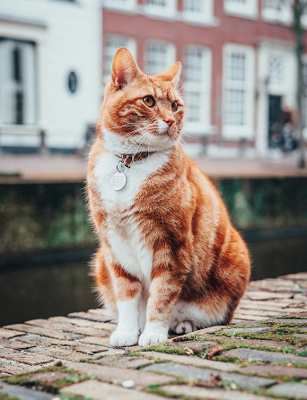
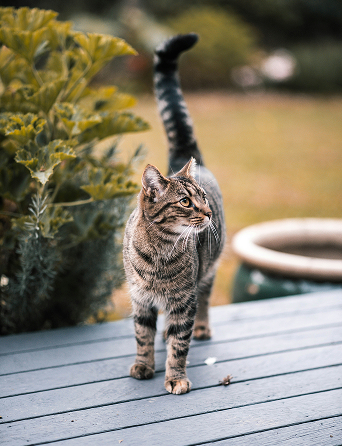
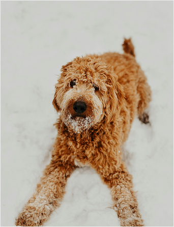
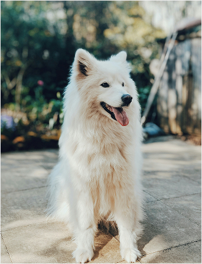
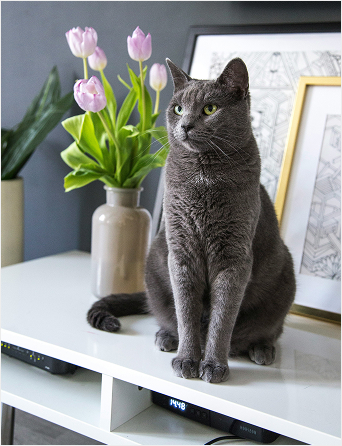
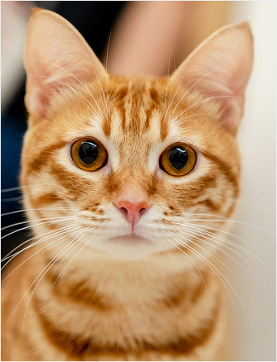
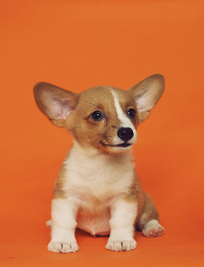

팝업
애타는 마음과 따뜻한 손길이 모여
기적 같은 재회와 행복한 입양을 만듭니다
길 잃은 생명에게 따뜻한 손길을 건네고
행복한 반려의 기쁨을 함께 공유하세요
실종, 구조, 입양부터 유익한 반려 지식과
따뜻한 소통까지 모두 나누는 곳
찾습니다
잃어버린 반려동물 찾습니다.
- 실종장소 경기 고양시 노첨길 95
- 실종날짜 2026-02-16
- 품종 시츄 수컷 7kg 10살
- 특징 이마 중앙에 흰색 세로줄

- 실종장소 대구 바르미스시뷔페두산점 야외주차장
- 실종날짜 2026-01-23
- 품종 춘향이/암컷/중성화
- 특징 M무늬/앞발 흰색털 높이 짧음/호박색 눈

- 실종장소 대구 중구 남산까치아파트
- 실종날짜 2025-10-14
- 품종 블랙단모치와와 수컷
- 특징 산책을 싫어해서 집에 있던 아이

- 실종장소 경남 창원시 의창구 봉곡동 81-1번지
- 실종날짜 2026-02-20
- 품종 코리아숏헤어 수컷
- 특징 꼬리가 번개모양

- 실종장소 충남 대전시 유성구 봉명동 32번지
- 실종날짜 2025-12-20
- 품종 푸들
- 특징 꼬질함

- 실종장소 대구 중구 남산까치아파트
- 실종날짜 2026.01.03
- 품종 사모예드
- 특징 순함

- 실종장소 서울특별시 서울역
- 실종날짜 2026.01.03
- 품종 러시안블루
- 특징 귀 잘림, 뒷발 발톱 없음

- 실종장소 경기도 수원시
- 실종날짜 2025.01.16
- 품종 치즈냥
- 특징 귀여움
반려동물 보호자 찾습니다.

- 실종장소 경기 광주시 곤지암읍
- 실종날짜 2026-02-28
- 품종 강아지 암컷
- 특징 털이 깨끗하고 사람을 잘 따름

- 실종장소 경북 영주시 가흥동 신재로
- 실종날짜 2026-02-20
- 품종 슈나우저
- 특징 슈나우저로 추정되는 개 한마리를 발견

- 실종장소 대구 각산역 근처
- 실종날짜 2026-02-11
- 품종 삼색고양이
- 특징 파란 목줄에 검은색 타이끈으로 고정

- 실종장소 경기 시흥
- 실종날짜 2026-02-12
- 품종 래브라도 리트리버
- 특징 3개월된 아기 검정 래브라도

- 실종장소 대구 중구
- 실종날짜 2025.01.25
- 품종 웰시코기
- 특징 겁이 많음, 입가에 점 있음
- 실종장소
- 실종날짜
- 품종
- 특징


가족이 되어주세요
ADOPT, DON’T SHOP.ADOPT, DON’T SHOP.ADOPT, DON’T SHOP.ADOPT, DON’T SHOP.